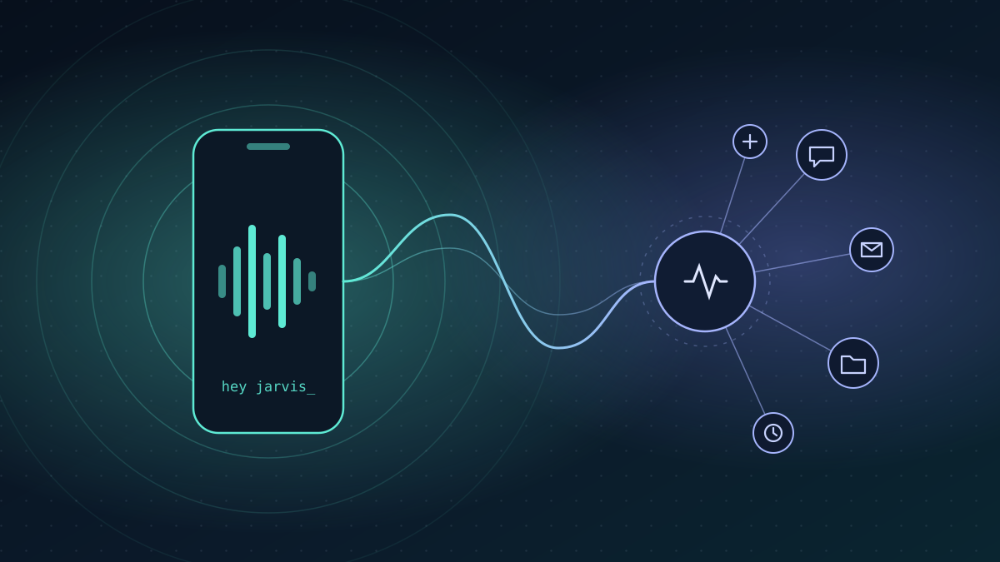

Jarvis
ActivoUn asistente de voz personal y gratuito: se le dice «hey Jarvis» al móvil Android, se da una orden y contesta por el auricular.
Estimación. Casi todo lo previsto está escrito y la voz de ida y vuelta funciona en el móvil real; buena parte de lo demás solo se ha probado con simulaciones.
- Python
- Android
- Termux
- FastAPI
- Whisper
- Piper
- Ollama
- Groq
- Gemini
- Tailscale
- Windows
«Abrir en VS Code» abre el programa, pregunta en qué carpeta guardarlo y lo trae de GitHub. Si ya lo tienes en ese ordenador, ábrelo desde VS Code y pulsa sincronizar. «Editar en el navegador» lo abre al día, sin instalar nada, pero no puede ejecutarlo.
El código es privado: GitHub pedirá iniciar sesión con una cuenta que tenga permiso.

- Etapa
- Etapa 3: probar en el móvil y con las cuentas reales lo que solo se ha simulado
- Empezó
- 16 de noviembre de 2026
- Último movimiento
- 25 de noviembre de 2026
- Tamaño
- 17.908 líneas en 44 archivos de código
- Cambios guardados en git
- 1
En corto
Un asistente de voz en dos piezas. El móvil Android, con Termux, escucha sin parar y no manda nada hasta oír «hey Jarvis». Entonces graba la orden y la envía a un servidor en el ordenador de casa, que la pasa a texto, pregunta a una inteligencia artificial, ejecuta lo que haga falta y devuelve la respuesta hablada, frase a frase.
Todo es gratuito. El servidor reparte las preguntas entre varias IA gratuitas de Internet, lleva la cuenta de lo que le queda a cada una y pasa sola a la siguiente; un modelo pequeño en el propio ordenador queda de reserva solo para conversar.
Además de conversar, hace cosas: WhatsApp, correo, alarmas, búsquedas en Internet, archivos del ordenador, documentos e informes, manejar el móvil y el ordenador. Lo delicado (enviar, borrar, apagar) pide siempre un «sí» de viva voz. Tiene un panel de control en el navegador con cupos, conversación por escrito, valoraciones y lista de tareas.
La norma principal es que no invente: si no sabe o no puede averiguarlo, lo dice.
Cómo está hecho
La orden sale de la voz, pasa por el móvil y llega al servidor por un canal en directo. El servidor la entiende, elige una IA, ejecuta lo que haga falta y devuelve la respuesta hablada. La línea de trazos es el camino de la voz.
Leer el esquema como texto
Elementos
- Tú. Tu voz: «Hey Jarvis» y la orden; Tu auricular: La respuesta hablada.
- Móvil Android · Termux. palabra_clave.py: Detecta «hey Jarvis»; cliente.py: Graba, envía y reproduce; manos.py: Maneja el móvil; app_movil.py: Pantalla y botón de llamar.
- Servidor · FastAPI. servidor.py: Atiende la orden entera; memoria.py: Lo que sabe de su dueño; conciencia.py: Lo que sabe de sí mismo; panel.html: Panel de control.
- Entender y hablar. El oído: Whisper: de voz a texto; cerebro.py · selector.py: Elige la IA y la releva; La voz: De texto a voz, por frases.
- Lo que sabe hacer. whatsapp.py: Mensajes y notas de voz; correo.py: Enviar y leer correos; internet.py: Tiempo, noticias y datos; explorador.py: Archivos del ordenador; alarmas.py: Avisos y recordatorios; movil.py · pc.py: Órdenes al móvil y al PC.
- IA y voces. IA gratuitas: Groq, Gemini y otras; Reserva local: Ollama, Whisper y Piper.
- El mundo de fuera. WhatsApp: La cuenta enlazada; Correo: La cuenta propia de Jarvis; Internet: Fuentes públicas de datos; El ordenador: Carpetas y programas.
Conexiones
- Tu voz → palabra_clave.py: voz
- palabra_clave.py → cliente.py
- cliente.py → Tu auricular: respuesta
- cliente.py → manos.py
- cliente.py ↔ servidor.py: canal en directo
- servidor.py → El oído
- servidor.py → cerebro.py · selector.py
- servidor.py → La voz
- servidor.py → whatsapp.py
- servidor.py → correo.py
- servidor.py → internet.py
- servidor.py → explorador.py
- servidor.py → alarmas.py
- servidor.py → movil.py · pc.py
- El oído → IA gratuitas
- cerebro.py · selector.py → IA gratuitas: con relevo
- cerebro.py · selector.py → Reserva local: reserva
- La voz → Reserva local
- whatsapp.py → WhatsApp
- correo.py → Correo
- internet.py → Internet
- explorador.py → El ordenador
- movil.py · pc.py → El ordenador
Siguiente paso
Probar en el móvil real, una por una, las funciones que solo se han probado con simulaciones, empezando por las de WhatsApp con la cuenta de verdad y las alarmas, y apuntar lo que falle.
Etapas
- HechaEtapa 1: voz de ida y vuelta
Palabra de llamada en el móvil, orden al servidor, reconocimiento de voz, IA y respuesta hablada. Comprobado en el móvil real.
- HechaEtapa 2: que haga cosas
WhatsApp, correo, Internet, alarmas, archivos, documentos, memoria personal, manejar el móvil y el ordenador, panel de control. Escrito y probado con simulaciones y con las IA de verdad.
- En cursoEtapa 3: probarlo todo en real
En el móvil real funcionan la activación, las órdenes y abrir y poner vídeos de YouTube. Falta comprobar en real casi todo lo demás.
- PendienteEtapa 4: servidor siempre encendido
Hoy el servidor es el ordenador de casa. Falta decidir y montar una máquina que no se apague.
- PendienteEtapa 5: lo que aún no sabe
Contestar correos, buscar fotos por lo que se ve, decir dónde está el móvil, cerrar programas, dictar al ordenador y reconocer quién habla.
Qué hay hecho
- Cliente para Termux: detector de «hey Jarvis» con un modelo entrenado con la voz del dueño, que además aprende solo de sus activaciones falsas.
- Servidor con canal de voz en directo: reconocimiento con Whisper, respuesta de la IA y voz neuronal, con una voz local de reserva.
- Segunda comprobación en el servidor de que de verdad se ha dicho «Jarvis», para descartar conversación de casa.
- Fila de IA gratuitas con relevo: catálogo de servicios, cuenta de cupos, pulso de rapidez y selector que elige la más rentable para cada petición.
- Instrucciones cortas para la charla y completas solo para las órdenes, para gastar pocos tokens.
- WhatsApp: enviar mensajes y notas de voz a contactos y grupos, leer y resumir lo recibido, buscar en las conversaciones, avisos y mensajes programados.
- Correo: enviar con adjuntos y leer en voz alta lo que llega.
- Internet: el tiempo, noticias, búsquedas, precio de la luz, precios del supermercado, aviones en el aire y un investigador de varios pasos.
- Alarmas, temporizadores y recordatorios, también repetidos.
- Archivos del ordenador: buscar, mover, copiar, renombrar, borrar a una papelera propia, ordenar, comprimir y deshacer.
- Documentos e informes en texto o PDF, conversiones de archivos y copias de seguridad.
- Leer archivos: texto, PDF, Word, Excel, fotos y audios.
- Memoria personal que se va llenando con lo que el dueño cuenta de sí mismo.
- Manejar el móvil: abrir aplicaciones, YouTube, mapas, volumen, linterna, llamadas y SMS; con el permiso de depuración, pulsar, escribir y leer la pantalla.
- Manejar el ordenador desde el móvil y pasar cosas entre los dos: portapapeles, fotos y archivos.
- Panel de control con pestañas: resumen, conversación por escrito, inteligencias, actividad, valoraciones y tareas.
- Mejora del oído: vocabulario propio, modo de entrenamiento y guardado de lo que entendió mal.
- Jarvis se conoce: explica cómo está hecho y escribe propuestas de mejora de su propio programa, que no aplica él solo.
- Uso fuera de casa con Tailscale; el cliente elige solo entre la dirección de casa y la de fuera.
- Pantalla instalable en el móvil y puerta local para llamarlo con un botón.
Qué falta
- Probar con la cuenta real de WhatsApp: recibir y resumir mensajes, y enviar una nota de voz.
- Probar en el móvil real: alarmas, interrumpir a Jarvis mientras habla, pantalla del móvil, mandos de reproducción, pasar fotos y archivos, llamadas y SMS.
- Probar un envío real de correo y la lectura del buzón con la IA.
- Probar el uso real en la calle con Tailscale.
- El botón del reloj: falta una aplicación de automatización en el móvil que capture el botón y llame a la puerta local.
- Servidor definitivo en una máquina siempre encendida.
- Funciones sin hacer: contestar correos, buscar fotos por lo que se ve, decir dónde está el móvil, cerrar programas, escribir en el ordenador lo dictado.
- Reconocer quién habla, para no atender a otras personas de la casa.
- Letras deletreadas: el reconocedor las junta en palabras.
- Con auricular Bluetooth, Termux graba con el micrófono del móvil y no con el del auricular.
- El archivo principal del servidor ha crecido mucho y convendría partirlo.
- Las instrucciones del proyecto empiezan describiendo la primera versión y hay que ponerlas al día.
Lecciones aprendidas
- Las IA gratuitas tienen topes por minuto y por día. Unas instrucciones largas los agotan enseguida: hay que medir los tokens antes de engordarlas.
- Un modelo pequeño de reserva inventa órdenes y datos. Solo se le deja conversar.
- Las IA gratuitas fallan con tablas de números. Las cuentas se hacen en el programa y a la IA se le da la cifra ya hecha.
- No endurecer la activación a ciegas. Antes de tocar un umbral, mirar el registro real del móvil.
- Una comprobación nueva que puede dejar callado a Jarvis hay que vigilarla en el registro el mismo día.
- Dar al reconocedor de voz una pista con la palabra esperada hace que la escriba aunque no se haya dicho.
- Un pitido de aviso se cuela por el micrófono y cuenta como voz. Hace falta un detector de voz humana.
- En la memoria de la conversación se guarda la orden que dio la IA, no el «hecho» que dice el sistema; si no, la siguiente IA imita el «hecho» sin dar la orden.
- Las pruebas con IA de verdad gastan el cupo del día. Mejor funciones sueltas y servicios de mentira, y las conversaciones completas, las justas.
- Cuando «va lento», la causa puede estar fuera del programa: el ordenador se suspendía y perdía la red.
- Para un tema nuevo funciona añadir una fuente de datos ordenados, no afinar la búsqueda en la web.
- Al texto de los mensajes ajenos no se le deja llegar a la IA que da las órdenes, para que un mensaje no pueda mandar.
Diario
El código se guarda en git y se sube a un repositorio privado de GitHub. Se crea esta ficha.
Archivos de todo el ordenador, con papelera propia y deshacer. Pestaña de tareas en el panel. Conversiones y PDF, copias de seguridad, informes, lectura del correo, alarmas repetidas, más control del ordenador, llamadas y SMS. Probado con casa, correo y teléfono de mentira.
El ordenador pasa a tener más memoria y el servidor elige solo el modelo local y el reconocedor local que le caben.
WhatsApp completo: leer, resumir y buscar. Selector que elige la IA más rentable y pulso de rapidez. Panel rehecho con pestañas, conversación por escrito y valoraciones. Datos en vivo e investigador en Internet. Tailscale para usarlo fuera de casa. Manejar el móvil: «abre YouTube» y «pon tal cosa en YouTube» funcionan en el móvil real. Primer lote de funciones entre móvil y ordenador.
Nace el proyecto y en un día llega lejos. Voz de ida y vuelta comprobada en el móvil real. Fila de IA gratuitas con relevo. Modelo de la voz del dueño, porque el detector general falla con acento castellano. WhatsApp, correo, carpeta compartida, lectura de archivos, memoria personal, Internet, alarmas, panel de cupos y propuestas de mejora escritas por el propio Jarvis. Se arreglan las activaciones falsas con una segunda comprobación en el servidor.
Memoria para retomar
El cuaderno técnico del proyecto: lo necesario para ponerse al día y seguir.
Abrir la memoria para retomar
Qué es y qué se busca
Un asistente de voz personal, gratuito y sin servicios de pago. Se dice «hey Jarvis» al móvil Android, se da una orden y la respuesta suena por el auricular. La meta es poder manejar de viva voz, sin mirar la pantalla, los mensajes, el correo, los archivos, el móvil y el ordenador.
Tiene dos piezas. El cliente va en el móvil, dentro de Termux: escucha sin parar, pero el audio no sale del móvil hasta que oye la palabra de llamada. El servidor va en un ordenador encendido: pasa la voz a texto, pregunta a una IA, ejecuta la orden y devuelve la respuesta hablada.
Normas del proyecto
- No inventar. Si Jarvis no sabe algo o no puede averiguarlo, lo dice.
- Todo gratuito. Solo IA y servicios sin coste; las claves van en variables de entorno, nunca en archivos.
- Lo delicado se confirma de viva voz. Enviar, borrar, apagar o llamar piden un «sí».
- Nada se destruye. Lo borrado y las versiones anteriores van a una papelera propia.
- Jarvis propone, no se cambia solo. Escribe propuestas de mejora; aplicarlas es cosa de una persona, y hay que revisarlas antes.
- Pruebas sin tocar lo real. Servidor de prueba en otro puerto, WhatsApp, correo, casa y teléfono de mentira.
- Gastar pocos tokens. Medir antes de alargar las instrucciones a la IA.
Cómo ponerlo en marcha
El servidor, en Windows: servidor\arrancar.ps1. En Linux: servidor/instalar_servidor.sh y luego servidor/arrancar.sh. Al arrancar dice la dirección y la contraseña que hay que poner en el móvil. El entorno de Python del proyecto es de la versión 3.12, porque una de las piezas no existe para versiones más nuevas.
El panel de control se abre en el navegador, en /panel del servidor, o con servidor\abrir_panel.ps1.
El móvil: instalar Termux y Termux API, ejecutar instalar_termux.sh y después python cliente.py. La primera vez pregunta la dirección del servidor y la contraseña. Para ponerlo al día, bash actualizar.sh en la carpeta del cliente; el cliente dice su versión al arrancar.
Otras órdenes útiles:
python cliente.py --conexion: comprueba paso a paso si el móvil llega al servidor.python cliente.py --fuera DIRECCIÓN: guarda la dirección para usarlo fuera de casa.python entrenar.py: graba la voz del dueño y entrena su detector; con--repasarreentrena con las activaciones falsas.servidor\clave_ia.ps1: guarda la clave de un servicio de IA y la prueba.python catalogo.py: dice qué IA hay y si contestan.servidor\comprobar_conexion.ps1: revisa la red desde el ordenador.
Las variables de entorno que cambian el comportamiento empiezan todas por JARVIS_. Las instrucciones completas están en LEEME.md.
Cómo está hecho
Python en las dos piezas. El servidor es una aplicación FastAPI con un canal en directo para la voz y otro para el panel.
Cliente (cliente):
cliente.py: escucha, graba la orden, la envía y reproduce la respuesta. También vigila para poder interrumpir.palabra_clave.py: el detector de la palabra de llamada.entrenar.py: el modelo de la voz del dueño.manos.py: lo que el móvil hace cuando el servidor se lo pide (abrir aplicaciones, pulsar, leer la pantalla).app_movil.py: la pantalla instalable del móvil.
Servidor (servidor):
servidor.py: la pieza central y la más grande. Atiende la orden de principio a fin y reparte el trabajo.- Las IA:
cerebro.py(fila con relevo),catalogo.py(servicios y modelos),cupos.py(cuenta de lo gastado),selector.py(cuál conviene a cada petición),pulso.py(cuál va rápida ahora),equipo.py(qué modelos locales caben). - El oído:
vocabulario.pyyentrenamiento.py. - WhatsApp:
whatsapp.py,mensajes.py(lo recibido, en una base de datos) yconversaciones.py(contarlo de viva voz). correo.py,alarmas.py,internet.pyeinvestigador.py.- Archivos:
archivos.py,explorador.py,lector.py,taller.pyyguardian.py. movil.pyypc.py: las órdenes para el móvil y para el ordenador.memoria.py: lo que sabe del dueño.conciencia.py: lo que sabe de sí mismo, con las listas de lo que sabe y no sabe hacer.panel.html,valoraciones.pyytareas.py: el panel de control.
La IA no hace nada por sí misma: contesta con una orden en una línea, como WHATSAPP|contacto|mensaje o ALARMA|cuándo|mensaje, y es el programa quien la ejecuta. Al añadir una función real hay que apuntarla en la lista de capacidades de conciencia.py.
Fuera del repositorio quedan, a propósito: los modelos descargados, las grabaciones, la contraseña, la sesión de WhatsApp, los mensajes guardados y los logotipos del panel. Los modelos se bajan solos al arrancar.
Dónde está ahora
- La voz de ida y vuelta funciona en el móvil real: activación, orden y respuesta.
- En el móvil real también funcionan «abre YouTube» y «pon tal cosa en YouTube».
- Las claves de varios servicios de IA gratuitos están puestas y contestan.
- La cuenta de correo propia de Jarvis existe y el inicio de sesión funciona.
- Tailscale está instalado en el ordenador y en el móvil.
- Casi todo lo demás está escrito y probado solo con simulaciones.
- El cliente va por la versión «20 de noviembre, décima». El último cambio de código es del 20 de noviembre de 2026.
Qué falta
- Probar en real lo simulado: WhatsApp recibido y notas de voz, alarmas en el móvil, interrumpir, pantalla del móvil, mandos de reproducción, pasar fotos y archivos, llamadas y SMS, envío de correo, y el uso en la calle.
- El botón del reloj: falta que una aplicación de automatización del móvil capture el botón y llame a la puerta local del cliente.
- Un servidor siempre encendido.
- Funciones apuntadas como pendientes en la pestaña de tareas: contestar correos, buscar fotos por lo que se ve, decir dónde está el móvil, cerrar programas y escribir en el ordenador lo dictado.
- Reconocer quién habla. La idea es entrenar un reconocedor con las grabaciones ya valoradas.
- Poner al día
LEEME.md, que empieza describiendo la primera versión, y partirservidor.py, que ha crecido mucho.
Cómo se depura
- Leer
modelos\jarvis.log: dice los tiempos de cada orden y qué IA contestó. - Leer
modelos\diagnostico\registro.txt: es el registro que sube el móvil, con activaciones, falsos y tiempos. - Si falla el oído, mirar
modelos\fallos_de_oidoy medir con esos audios antes de cambiar nada. - Si el dueño dice «mira el informe», leer
modelos\informe_no_sabe.md. - Si el móvil no conecta, comprobar primero qué versión del cliente lleva.
Cosas técnicas que costó averiguar
- El detector general de la palabra falla con acento castellano. Por eso hay un modelo propio de la voz del dueño.
- En Termux no entra el paquete del detector; se usan sus modelos directamente con numpy y onnxruntime.
- El reconocedor de voz escribe mejor la orden si se le corta antes el «hey Jarvis» y se le pasa sin pista.
- Los servicios gratuitos cambian: unos piden tarjeta, otros se saturan.
catalogo.pypregunta a cada uno qué modelos tiene de verdad. - Para saber si una IA va rápida vale más el tiempo de las preguntas reales que una sonda mínima.
- Termux no recibe los botones multimedia del reloj. De ahí la puerta local para una aplicación de automatización.
- El móvil solo conecta al dar una orden, así que pregunta cada pocos segundos si hay avisos o alarmas vencidas.
- No hay ffmpeg en el ordenador: las notas de voz se convierten con otra biblioteca de Python.
- El buscador solo contesta bien con una identificación de navegador sencilla.
Texto para retomarlo con Claude
Pega este texto al empezar una sesión y Claude se pone al día.
Vamos a retomar el proyecto jarvis, un asistente de voz con el cliente en un móvil Android (Termux) y el servidor en el ordenador. Antes de tocar nada, lee LEEME.md del proyecto y la memoria para retomar de su ficha en la web de proyectos. Después mira el final de modelos\jarvis.log y de modelos\diagnostico\registro.txt para ver qué pasó la última vez. Dime en pocas líneas en qué punto estamos y cuál es el siguiente paso, y espera mi visto bueno. Normas: Jarvis no inventa; todo gratuito; lo delicado se confirma de viva voz; las pruebas, con servicios de mentira y en otro puerto, sin tocar mi sesión real de WhatsApp, mi buzón, mis carpetas ni mi ordenador; y gastar pocos tokens de las IA.